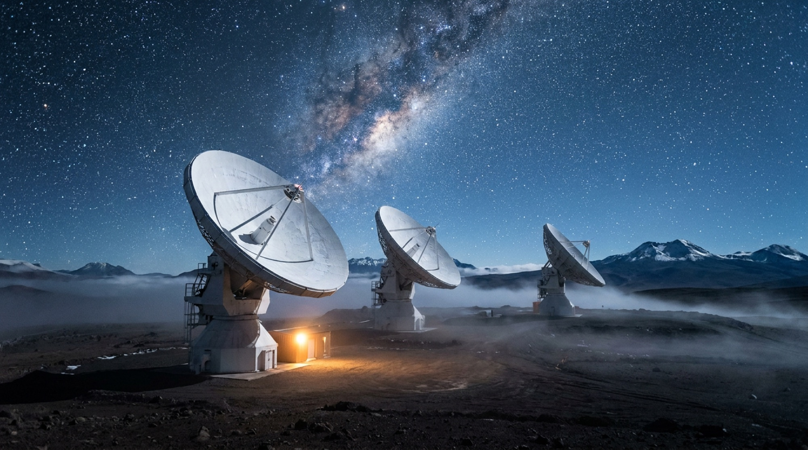

Segmento espacial
Veinticuatro nodos.
Tres planos. Un solo sistema.
La constelación se propaga en tiempo real. Selecciona cualquier nodo para leer su telemetría, su estado de iluminación y sus enlaces activos con el segmento terrestre.
24 nodos · 3 planos
—
—
ECU-1 · ecuatorial
POL-1 · polar
SSO-1 · sincrónico

Segmento terrestre
Ecuador está en el mejor sitio del planeta.
Una estación en la latitud cero ve pasar todos los nodos de una órbita ecuatorial en cada revolución. A 4 180 metros, sobre la capa húmeda de la atmósfera, el enlace óptico terrestre pierde un orden de magnitud menos de señal.
- Quito · ECU
- 0,18° S · 4 180 m
- Singapur · SGP
- 1,35° N · nivel del mar
- Nairobi · KEN
- 1,29° S · 1 795 m
- Svalbard · NOR
- 78,22° N · polar
Latencia
Más cerca desde arriba.
Elige una ciudad. Comparamos el enlace óptico al plano orbital más cercano contra la ruta terrestre real por fibra hasta el centro de datos convencional más próximo.
Origen
11ms · ida y vuelta
ORBITAL
11 ms
Fibra terrestre
96 ms
Continuar